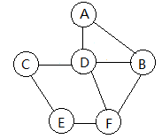
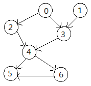
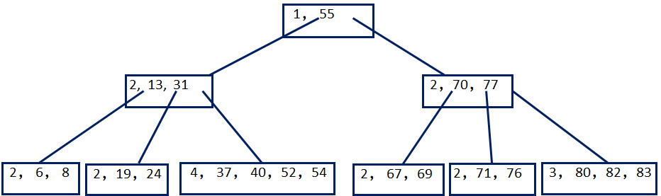
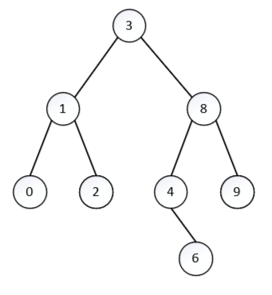

答案速览
选择题答案为：
简答题关键结果：无向图不存在欧拉回路；拓扑序列共有 5 个；置换选择初始归并段为 3 段；插入 39 后 5 阶 B 树把 40 上提；buildHeap 小顶堆顺序存储为
一、选择题解析
1. 单链表删除所有值为 \(x\) 的元素只需要改指针，删除过程中不必整体移动后继元素；顺序表删除多个元素通常会移动大量元素。因此选 C。
2. 操作数栈最大深度分别为：A 为 4，B 为 2，C 为 3，D 为 3。只有 \(ab-c*d-\) 在 2 个单元内不会上溢。因此选 B。
3. 循环队列容量为 25，元素数按 \((rear-front+25)\bmod 25\) 计算：
所以选 A。
4. 高度为 \(h\) 的二叉树最少是一条链，有 \(h\) 个结点；最多是满二叉树，有 \(2^h-1\) 个结点。因此选 D。
5. 树中除根以外每个结点都有且仅有一条父边，所以所有结点度数之和等于边数 \(n-1\)。选 A。
6. 分块查找要求块间有序，即前一块最大关键字小于后一块最大关键字或索引有序；块内可以无序，块大小不必相等。选 B。
7. 二叉查找树若退化成单支树，查找最坏要比较 \(n\) 次，复杂度为 \(O(n)\)。选 A。
8. 再散列法只能降低冲突概率，不能保证不再冲突；这是错误说法。选 B。
9. 快速排序每趟划分能把枢轴放到最终位置，且时间性能强烈受初始序列影响。选 B。
10. 序列每趟选出当前最小值放到前面：第一趟把 15 放到第 1 位，第二趟把 21 放到第 2 位，符合直接选择排序。选 A。
11. 5 阶 B 树非根内部结点最少有 \(\lceil5/2\rceil-1=2\) 个关键字，最多 4 个关键字。要让高度最高，关键字尽量少。高度不包括失败叶结点，只有根结点树高为 1。高度为 4 时最少关键字数为
正好可容纳 53 个关键字；高度为 5 最少会超过 53。因此选 C。
12. 图的基本操作复杂度取决于具体操作和存储结构，可能同时与顶点数 \(v\) 和边数 \(e\) 有关。选 D。
13. 多阶段归并的目标是平衡各磁带归并段数量、减少无效复制，不是“最大限度提高归并路数”。选 B。
14. 小顶堆优先级队列插入和删除最小元素都沿树高调整，复杂度都是 \(O(\log_2 n)\)。选 C。
15. 若非空二叉树的先序与后序序列正好相反，则每个结点至多有一个孩子，树退化为链，高度为 \(n\)。选 A。
二、简答题解析
1. 欧拉回路。 原图如下：

欧拉回路指从某个顶点出发，沿图中的边行走，每条边恰好经过一次，最后回到出发顶点的闭合路径。对无向图来说，判断欧拉回路有一个标准定理：一个非空无向图存在欧拉回路，当且仅当所有非零度顶点属于同一个连通分量，并且每个顶点的度数都是偶数。
本题图是连通的，所以关键只剩下检查度数。逐点数与该点相连的边数，得到
其中 \(B\) 和 \(F\) 是奇度顶点，不满足“所有顶点度数均为偶数”的条件。因此该图不存在欧拉回路。
补充：无向连通图若恰有两个奇度顶点，则存在欧拉路径，且路径必须从一个奇度顶点出发、到另一个奇度顶点结束。本图可以给出一条从 \(B\) 到 \(F\) 的欧拉路径：
2. 拓扑序列。 有向图如下：

拓扑序列是针对有向无环图 \(DAG\) 的线性排列。若图中存在一条有向边 \(u\to v\)，那么在线性序列中 \(u\) 必须排在 \(v\) 前面。换句话说，拓扑序列把“先修关系”或“依赖关系”排成一条满足所有约束的直线。
本题的边为
先计算入度。入度为 0 的顶点可以作为当前序列的下一个顶点；每选出一个顶点，就删除它发出的边，并更新后继顶点的入度。初始入度为
所以第一位只能从 \(0,1\) 中选。分类枚举如下。
若先选 \(0\)，删除 \(0\to2,0\to3\) 后，\(2\) 入度变为 0，\(3\) 还需要等待 \(1\)。此时可选 \(1\) 或 \(2\)。若走 \(0,1\)，则 \(2,3\) 都可选，得到两种前缀：
若走 \(0,2\)，则 \(3\) 仍必须等 \(1\)，所以只能接 \(1,3\)，得到前缀
若先选 \(1\)，删除 \(1\to3\) 后，仍只有 \(0\) 入度为 0，所以必须接 \(0\)。之后同样有 \(2,3\) 两种相对顺序：
以上每个前缀都已经把 \(2\) 和 \(3\) 放在 \(4\) 前面，因此接下来 \(4\) 才能入列。选出 \(4\) 后，\(6\) 入度变为 0，而 \(5\) 还要等待 \(6\)，所以尾部只能是
因此所有拓扑序列为：
3. 置换选择法。 置换选择法用于外部排序生成初始归并段。它的思想是：内存工作区中保存 \(w\) 个记录，每次从“当前归并段可用的记录”中选最小者输出；随后读入一个新记录。如果新记录不小于刚输出的记录，它仍属于当前归并段；如果新记录小于刚输出的记录，它不能再接到当前有序段后面，必须冻结到下一归并段。
本题工作区容量为 \(w=5\)，先读入
第一段从可用记录中不断输出递增序列。输出 \(1\) 后读入 \(0\)，因为 \(0<1\)，所以 \(0\) 冻结到下一段；输出 \(4,8,10,11,12,14,20\) 时，每次能接上的记录都继续留在当前段。因此第一段为
当当前段没有可用记录后，解冻被冻结的记录，开始第二段。按同样规则输出得到
剩下被冻结到第三段的记录继续组成最后一段：
所以初始归并段为：
4. 5 阶 B 树插入 39。 原图如下：

5 阶 B 树的“阶”表示一个结点最多有 5 棵子树，因此一个结点最多有 4 个关键字。除根外，非叶结点至少有 \(\lceil5/2\rceil=3\) 棵子树，也就是至少 2 个关键字。插入关键字时，先像多路查找树一样找到应插入的叶结点；若插入后关键字数超过上限，就分裂结点，并把中间关键字上提到父结点。
本题要插入 \(39\)。从根结点 \([55]\) 出发，因为 \(39<55\)，走左子树；在内部结点 \([13,31]\) 中，因为 \(39>31\)，走最右侧叶结点。因此插入位置是
把 39 插入后，该叶结点暂时变为
它有 5 个关键字，超过 5 阶 B 树的上限 4 个关键字，所以必须分裂。中间关键字 \(40\) 上提，左半部分为 \([37,39]\)，右半部分为 \([52,54]\)。父结点 \([13,31]\) 接收上提的 \(40\)，变为 \([13,31,40]\)。父结点现在只有 3 个关键字，没有继续溢出，所以调整结束。
插入后的结构为：
5. 第一趟排序结果。 待排序序列为 \(50,86,72,41,45,93,57,46\)。
“第一趟排序结果”要按不同算法的“一趟”定义分别理解。
希尔排序一趟指按当前步长分组做组内直接插入排序。步长为 4 时，分组为
各组升序后放回原下标，得到
冒泡排序一趟指从前到后比较相邻元素，把本趟最大元素交换到末尾。依次比较后，最大值 \(93\) 到达最后，得到
直接选择排序一趟指从整个待排序区间选最小元素，与第一个位置交换。最小值为 \(41\)，与首元素 \(50\) 交换，得到
二路归并排序第一趟通常把相邻两个长度为 1 的有序段合并成长度为 2 的有序段，所以
综上四种结果为：
6. buildHeap 构造小顶堆。 小顶堆是一棵完全二叉树，满足每个结点的关键字都不大于它的左右孩子。顺序存储时，若下标从 1 开始，结点 \(i\) 的左孩子是 \(2i\)，右孩子是 \(2i+1\)。
`buildHeap` 的标准做法是从最后一个非叶结点 \(\lfloor n/2\rfloor\) 开始，依次向前对每个结点做下滤。下滤时，把当前结点与较小的孩子比较；若当前结点更大，就与较小孩子交换，直到满足小顶堆性质。
本题初始顺序存储为
共有 \(n=11\) 个元素，因此从下标 \(5\) 开始下滤。关键步骤为：下标 5 的 \(30\) 与孩子 \(14\) 交换；下标 4 的 \(15\) 已小于孩子 \(35,45\)；下标 3 的 \(24\) 已小于孩子 \(25,66\)；下标 2 的 \(20\) 与较小孩子 \(14\) 交换后继续调整；最后下标 1 的 \(40\) 沿较小孩子方向下滤。最终得到顺序存储：
7. AVL 插入。 原 AVL 树如下：

AVL 树是带平衡条件的二叉查找树。它首先满足二叉查找树性质：左子树关键字小于根，右子树关键字大于根；同时任意结点左右子树高度差的绝对值不超过 1。插入后若某个祖先结点失衡，就按 LL、RR、LR、RL 四种情况旋转恢复平衡。
先插入 \(5\)。按二叉查找树路径查找：
所以 5 插到 6 的左孩子位置。此时结点 4 的右子树过高，且新结点位于 4 的右孩子 6 的左侧，是 RL 型失衡。处理方法是先对 6 右旋，再对 4 左旋。右子树局部变成以 5 为根、4 和 6 为左右孩子的结构：
再插入 \(7\)。查找路径为
所以 7 插到 6 的右孩子位置。此时结点 8 左高，且其左孩子 5 右高，是 LR 型失衡。处理方法是先对 5 左旋，再对 8 右旋，最终为：
8. 孩子兄弟链表示的森林。 孩子兄弟表示法把一片森林转化为一棵二叉树：二叉树中的左孩子表示该结点在森林中的第一个孩子，右孩子表示该结点在森林中的下一个兄弟。因此，读回森林时有两条规则：从根开始沿右孩子链读出森林中各棵树的根；对任一结点，从它的左孩子开始，再沿右孩子链读出它的所有孩子。
本题给出的完全二叉树按顺序存储为
顺序存储下，\(i\) 号结点的左孩子为 \(2i\)，右孩子为 \(2i+1\)。所以二叉树关系为：\(A\) 的左孩子为 \(B\)，右孩子为 \(C\)；\(C\) 的右孩子为 \(G\)。因此森林根链是
也就是森林有三棵树，根分别为 \(A,C,G\)。再按“左孩子加右兄弟链”读每个结点的孩子：\(A\) 的左孩子是 \(B\)，沿右兄弟链得到 \(B,E,K\)；\(B\) 的左孩子是 \(D\)，沿右兄弟链得到 \(D,I\)；\(D\) 的左孩子是 \(H\)；\(E\) 的左孩子是 \(J\)；\(C\) 的左孩子是 \(F\)。
因此森林为：
更直观地写成：第一棵树根为 \(A\)，孩子为 \(B,E,K\)，其中 \(B\) 的孩子为 \(D,I\)，\(D\) 的孩子为 \(H\)，\(E\) 的孩子为 \(J\)；第二棵树根为 \(C\)，孩子为 \(F\)；第三棵树只有根 \(G\)。
三、程序填空解析
1. 输出值为 x 的结点的所有祖先。 这段程序用两个栈模拟后序遍历：\(sn\) 存结点路径，\(sf\) 存访问状态。关键空应补为：
p = sn.top();
sf.push(1);
sf.push(2);
if (p->data == x) {
exist = true;
sn.pop();
break;
}
if (sn.isEmpty())原卷里 `sf.puch` 是拼写错误，应为 `sf.push`；`exist` 也应在循环前初始化为 `false`。找到 \(x\) 时栈中剩下的正是从根到父结点的祖先链。
2. 二叉查找树删除。 删除结点有两个孩子时，用右子树最小结点替换；否则让父指针直接指向唯一孩子或空指针：
if (t->left != NULL && t->right != NULL) {
BinaryNode *tmp = t->right;
while (tmp->left != NULL) tmp = tmp->left;
t->data = tmp->data;
remove(t->data.key, t->right);
} else {
BinaryNode *oldNode = t;
t = (t->left != NULL) ? t->left : t->right;
delete oldNode;
}3. 优先级队列入队。 小顶堆插入时向上过滤，循环更新 `hole`，最后把 \(x\) 放入空穴：
for (; hole > 1 && x < array[hole / 2]; hole /= 2)
array[hole] = array[hole / 2];
array[hole] = x;四、编程题解析
1. 输出从 source 出发路径长度为 M 的所有顶点。 这题的目标是：给定一个有向无环图、一个起点 \(source\) 和一个长度 \(M\)，输出所有能从 \(source\) 出发、经过恰好 \(M\) 条边到达的顶点。注意路径长度按边数计算，不按顶点数计算；长度为 0 时，能到达的顶点就是 \(source\) 本身。
题面给出的函数原型只有 `findAllVertex(typeOfVer source) const`，但题目文字又要求“路径长度为 M”。如果接口中没有 \(M\)，程序无法知道要找多长的路径，所以合理写法应把接口补成 `findAllVertex(typeOfVer source, int M) const`。考试时也可以在说明中写明：这里把 \(M\) 作为参数传入。
最直接的想法是从 \(source\) 做深度优先搜索，递归深度达到 \(M\) 时输出当前顶点。但如果不同路径到达同一个顶点，可能重复输出；而且图是 DAG，可以更清楚地用动态规划描述“第 \(k\) 步能到哪些顶点”。
设 `cur[i]` 表示“当前已经走了 \(k\) 条边后，顶点 \(i\) 是否可达”。初始时还没有走边，所以只有起点可达：
从第 \(k\) 步推进到第 \(k+1\) 步时，只需要沿所有当前可达顶点的出边传播。若当前可达 \(u\)，并且存在边 \(u\to v\)，那么走完下一条边后 \(v\) 可达：
循环执行 \(M\) 次之后，`cur` 中为 1 的顶点就是从 \(source\) 出发经过恰好 \(M\) 条边能到达的全部顶点。因为使用布尔数组记录可达性，同一个顶点即使由多条路径到达，也只输出一次。
template<class typeOfVer, class typeOfEdge>
void adjListGraph<typeOfVer, typeOfEdge>::findAllVertex(typeOfVer source, int M) const {
int s = find(source);
if (s == -1 || M < 0 || M >= edges) return;
vector<char> cur(vers, 0), next(vers, 0);
cur[s] = 1;
for (int step = 0; step < M; ++step) {
fill(next.begin(), next.end(), 0);
for (int i = 0; i < vers; ++i) {
if (!cur[i]) continue;
for (edgeNode *p = verList[i].head; p != NULL; p = p->next) {
next[p->end] = 1;
}
}
cur.swap(next);
}
for (int i = 0; i < vers; ++i) {
if (cur[i]) cout << verList[i].data << ' ';
}
}这段代码的核心循环不变量是：第 `step` 轮开始时，`cur` 正好表示走了 `step` 条边后可达的顶点集合。每轮根据邻接表扫描所有出边，构造下一层可达集合。若邻接表中顶点数为 \(v\)、边数为 \(e\)，循环执行 \(M\) 轮，每轮最多扫描所有边一次，所以时间复杂度为 \(O(M(v+e))\)，空间复杂度为 \(O(v)\)。如果题目要求“路径长度不超过 \(M\)”而不是“等于 \(M\)”，只需额外维护一个答案数组，把每一轮的 `cur` 都累加进去。
2. 判断二叉树是否为完全二叉树。 完全二叉树的定义是：除最后一层外，其余各层都必须填满；最后一层的结点必须从左到右连续排列，不能中间出现空位后面又出现结点。
这个定义最适合用层序遍历判断。层序遍历按从上到下、从左到右的顺序访问结点，正好对应完全二叉树的顺序填充规则。判断时维护一个布尔变量 `mustBeLeaf`，含义是：是否已经遇到过某个缺失的孩子。一旦遇到空左孩子或空右孩子，说明从此以后，层序序列中所有后续结点都必须是叶结点；如果后续又遇到某个非空孩子，就说明最后一层不是从左到右连续填充，二叉树不是完全二叉树。
具体分两种违规情况。第一，某结点没有左孩子却有右孩子，这一定不是完全二叉树，因为同一层出现了“左空右非空”。第二，前面已经出现过缺口，后面某结点还存在孩子，也不是完全二叉树，因为缺口后面又出现了更靠后的结点。
template<class elemType>
bool binaryTree<elemType>::isComplete() const {
if (root == NULL) return true;
queue<Node *> q;
q.push(root);
bool mustBeLeaf = false;
while (!q.empty()) {
Node *p = q.front();
q.pop();
if (p->left != NULL) {
if (mustBeLeaf) return false;
q.push(p->left);
} else {
mustBeLeaf = true;
}
if (p->right != NULL) {
if (mustBeLeaf) return false;
q.push(p->right);
} else {
mustBeLeaf = true;
}
}
return true;
}代码中 `mustBeLeaf=false` 表示目前还没有发现缺口，结点可以有孩子；一旦某个左孩子或右孩子为空，就把它置为 `true`。之后如果再遇到任何非空左孩子或右孩子，就立即返回 `false`。如果层序遍历结束都没有违反规则，就返回 `true`。每个结点最多入队出队一次，所以时间复杂度为 \(O(n)\)，队列最多保存一层结点，空间复杂度为 \(O(n)\)。
3. 解密外交信件。 这题的关键是看清加密操作的顺序，并按相反顺序做逆操作。加密时先把每一段连续非元音字符反转，再把整封信整体反转。这里的“非元音字符”不只是辅音字母，还包括空格和标点；元音只有 `a,e,i,o,u`。
设原文为 \(S\)。加密分两步：
现在给的是密文 \(C\)，要恢复原文，就必须倒过来做。第一步先整体反转密文，恢复到中间状态 \(T\)；第二步再把每一段连续非元音字段反转回来，得到原文 \(S\)。因为“反转”这个操作本身是自己的逆操作，同一段反转两次就恢复原状。
程序实现时，先写一个 `isVowel` 判断字符是否为元音。然后扫描字符串：如果当前位置是元音，直接跳过；如果当前位置不是元音，就从这里开始一直向右找到这一整段连续非元音字符 `[i,j)`，再调用 `reverse` 反转这一段。
bool isVowel(char c) {
return c == 'a' || c == 'e' || c == 'i' || c == 'o' || c == 'u';
}
string decode(string s) {
reverse(s.begin(), s.end());
int n = static_cast<int>(s.size());
int i = 0;
while (i < n) {
if (isVowel(s[i])) {
++i;
continue;
}
int j = i;
while (j < n && !isVowel(s[j])) ++j;
reverse(s.begin() + i, s.begin() + j);
i = j;
}
return s;
}用题目给出的例子检查。密文为 `seructu stratad`，先整体反转，得到中间串
再扫描并反转每段连续非元音字符，就恢复为
整个算法对字符串做一次整体反转，再线性扫描一次，每个字符只被处理常数次，所以时间复杂度为 \(O(n)\)。若直接在原字符串上原地反转，额外空间复杂度为 \(O(1)\)。